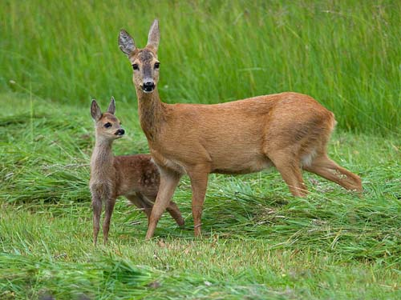

Елік
Қазақстанда Сібір түр тармағы (C.c. pygargus) кездеседі. Дене тұрқы 120 – 160 см, шоқтығына дейінгі биіктігі 75 – 100 см, салмағы 30 – 55 кг. Құйрығы өте қысқа. Ешкісі мүйізсіз, текесінің наурыз – мамырда толық жетіліп, қараша – желтоқсанда түсетін 3 – 5 ашалы мүйізі (25 – 40 см) болады. Аяқтары жіңішке әрі ұзын. Қыста түгінің түсі қоңырқай сұр, жазда жирен, жас лақтарының түгінде ашық түсті теңбіл дақтары болады. ЕлікТалас, Іле, Жетісу (Жоңғар) Алатауында, Батыс және Орталық Тянь-Шаньда, Қаратауда, Тарбағатайда, Сауырда және Оңтүстік Алтайда кездеседі.
Жеміс-жидек, мүк, қына және шөптесін өсімдіктердің жүзге жуық түрімен қоректенеді. Жазда жеке-жеке, ал басқа кезде топталып жүреді. Бір жарым жасында лақтайды. Шілде – тамыздан бастап 9 ай көтеріп 1 – 2, кейде 3 лақтан туады. Лақтарын 6 – 8 ай сүтімен қоректендіреді. Ешкісі 11 – 12, текесі 16 жылдай тіршілік етеді. Еті мен терісі үшін арнайы рұқсатпен ауланады. Кәсіптік маңызы бар.
